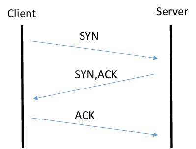

The three-way handshake of TCP/IP This is how an end user device and a server establish a connection. It is called a three-way handshake because it is a three-step process to establish a TCP connection.
The first step starts with the End User or Client machine. This machine sends a Synchronization Request (SYN) to the Server.
Next, the Server then replies with a SYN ACK. This Acknowledges the SYN request and the SYN from the server signifies the sequence number it will start with.
Finally The Client then Acknowledges
